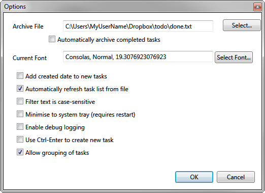

Accountability: Todo.txt and Done.txt
Looking forward with multiple todo.txt files
One of my favorite features of the todo.txt system is that you are not really locked down to a single todo.txt file. You could use the same format for any number of to-do lists. One of them might be "someday.txt" to put in some prospective tasks or projects you would like to do in the indeterminate future. Another could be a list of tasks specific to a certain project. Programmers often put ".todo" files (not necessarily in todo.txt format) in their source code repositories to help communicate and share tasks amongst the contributors. You can use these other lists to feed your main todo.txt list with tasks periodically.
Looking backward with done.txt
Built into the canonical Todo.txt implementation is a second file called done.txt. Done.txt is where you "archive" completed tasks to, if you ever notice that feature in Todotxt.net or the todo.sh command line tools. When you archive your completed tasks, your Todo.txt software will remove all the completed tasks from the todo.txt file and append them to the done.txt file.
In Todotxt.net, type alt+f, then a, to archive. you may have to set the path to done.txt in its options window (accessible through the menu File > Options).

Archiving tasks is useful because it gets your completed to-do items out of your way, which keeps your todo.txt file small, clean, and full of only relevant items. (You can think of archiving almost like emptying the Recycle Bin on your computerl; it is something you do occasionally or even daily as part of general housekeeping.) The resulting archive file, a plaintext file you can keep indefinitely if you want to, is useful in its own right.
First, a look at completed tasks
Let's look at what a completed task looks like in todo.txt:
x 2013-10-31 Go trick-or-treating +HalloweenNote that the line begins with a lowercase "x", followed by a space, and then the completion date, in YYYY-MM-DD format. All those elements are required to mark a task complete. (Todotxt.net and the todo.sh command enter today's date automatically for completed tasks, so it is not onerous to datestamp them.) Completed tasks are sorted to the bottom of your todo.txt file, out of the way.
An archive of all your completed tasks, everything dated and searchable
If you archive regularly, your done.txt file is going to be a file full of lines like those, all with a date and tagged with whatever projects, contexts, or what have you that you recorded in todo.txt. It is a dated, easily searchable log of all your recorded activities. You never have to lose track of the old stuff when you make room for the new stuff, like you often have to do in GUI-driven task managers.
You can use the done.txt file to peruse your task history or to restore a task you shouldn't have archived. Best of all, it is easily searched, and you can use just about any software tool out there (first and foremost, grep), to pull anything out of it by date, project, context, or keyword.
Having a searchable, dated record of everything I've done allows me to prove my accountability at work, which is important to me because I bill my time to various clients on various projects, and everybody wants to justify their consulting expenses from time to time. It provides great comfort to know that I can tell my clients exactly when I completed a deliverable, or exactly what I was working on in a given period or on a given day. Hardly anyone can do that, and, eventually, I'll be able to do that for tasks further back than just about anyone on my team.